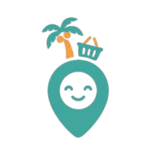
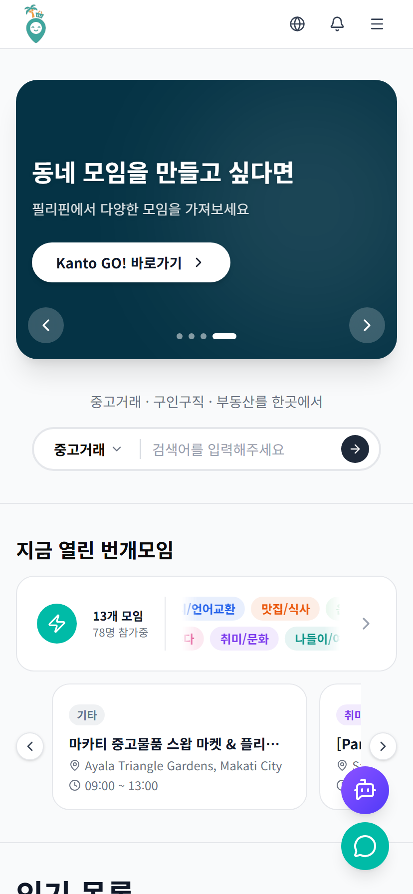
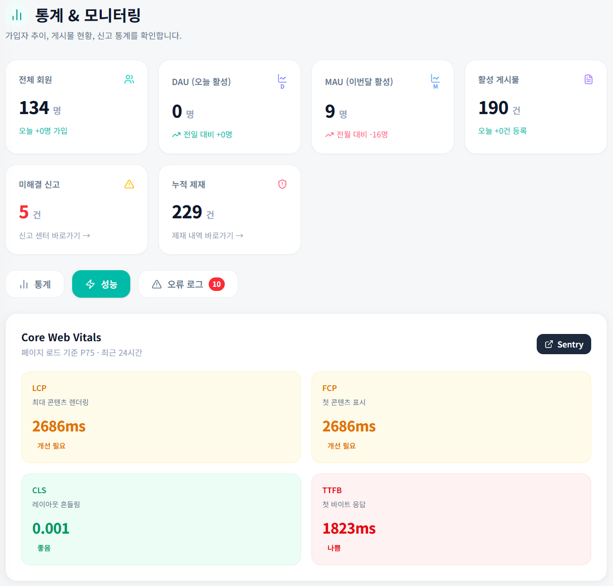
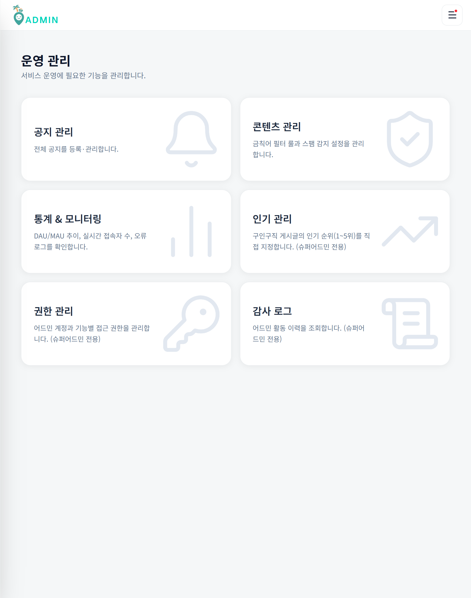
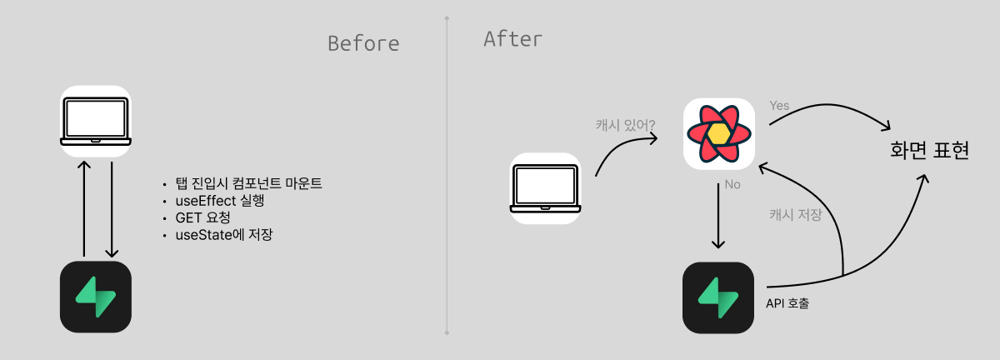
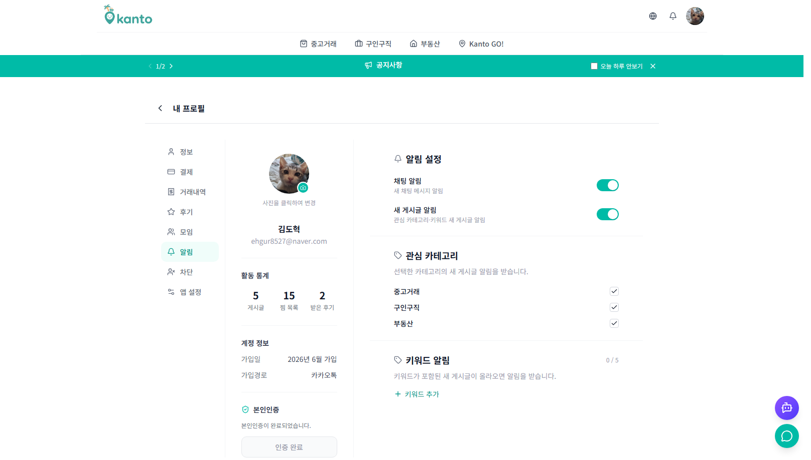
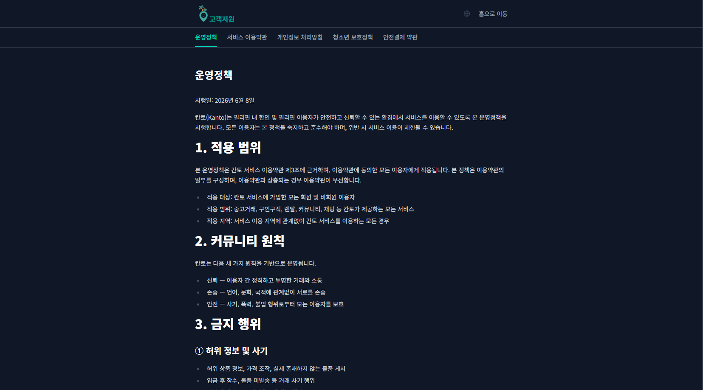
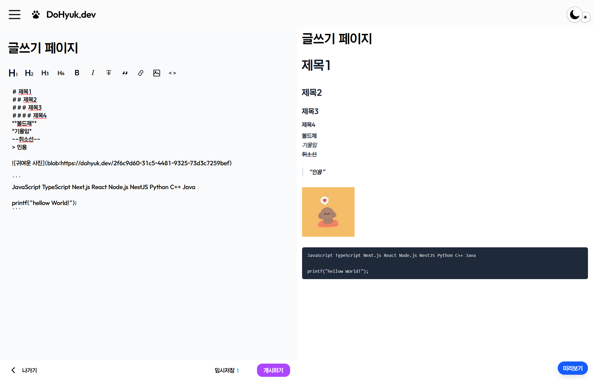
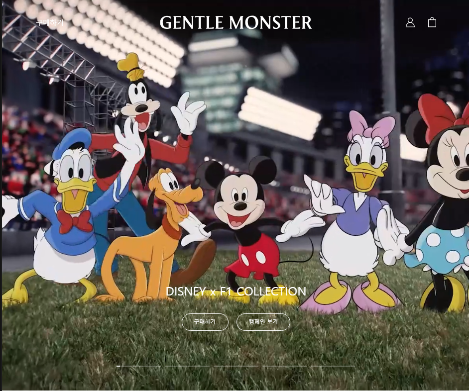

2017–2022
컴퓨터학부 학사
C · C++ · Unity(C#) · ARCore · ARKit
ROTC 60기







| 유저페이지 | https://kanto-iota.vercel.app/main |
|---|---|
| 관리자페이지 | https://kanto-iota.vercel.app/admin |
| 임시계정 | asdf1234@naver.com / asdf1234 |
필리핀에 흩어진 거래·일자리·주거 정보를 올인원을 목적으로 빠르고 안전하게 제공하기 위해서 만든 통합 생활 플랫폼입니다.
AI 기반 취합·요약을 위해 문서의 분류, 파일명, 작성 순서를 표준화하고 팀의 작업 기록에 적용했습니다.
| 유형 | 파일명 | 작성 구조 |
|---|---|---|
| 작업기록 | 날짜-작업주제[-작성자].md | 목적·배경 → 변경 내용·파일 → 결과·검증 |
| 설계 | 날짜형 또는 기능명 기반 | 배경 → 목표·비목표 → 설계안 → 구현·테스트 |
| 성능검사 | 페이지·라우트명.md | 측정 환경·지표 → 문제 → 우선순위 |
| 성능개선 | 범위-개선주제.md | 병목·원인 → 개선 → 전후 수치 → 검증 |
활용 결과
AI로 다양한 사용자·게시물 조건을 생성하고 KTS·KPPS를 적용해, 실제 서비스에서 예상되는 점수 분포와 정책의 경계 사례를 사전에 검토했습니다.

신규 가입
0–4주 · 거래 없음
초기 정착
가입 4주 · 안정 활동
활동 정착
3개월 · C등급 안착
신뢰 상승
6개월 · C→B 상승세
간헐적 활동
B↔C 등급 반복
활동 감소
하락세 유지
장기 활동
12개월 · B등급 유지
우수 사용자
18개월+ · 거래 20건+
위험 사용자
신고 누적 · 제재 이력



사용자 정보와 소셜 계정 상태를 안정적으로 제공하면서, 모바일과 데스크톱에서 탐색하기 쉬운 내정보 화면을 구현했습니다.
md(768px)를 기준으로 모바일과 PC 레이아웃 분기ProfileAside·ProfileMobileTabs를 분리해 PC는 세로 사이드바, 모바일은 가로 스크롤 탭으로 렌더링하고 동일한 activeTab 상태 공유initialIdentities Props로 전달SET NULL 구조 도입

* 회원가입 약관
약관 수정마다 코드를 다시 배포하지 않도록 Notion을 CMS로 활용하고, 반복 조회로 느려진 탭 전환은 클라이언트 캐시로 개선했습니다.
TermsHeader·TermsNav·TermsContent로 헤더·탐색·본문을 분리해 약관 종류별 동일한 UI 재사용
/terms/[type] 동적 라우트로 통합하고, URL의 type을 Notion 페이지 ID에 매핑해 중복 코드 제거

거래 상대방의 신뢰도와 인기 게시물을 객관적으로 판단할 기준이 필요했습니다.
이에 거래·리뷰·활동·신고 데이터를 KTS로, 게시물 반응·최신성·작성자 신뢰도를 KPPS로 산정해 프로필 신뢰도와 인기 게시물 노출에 반영했습니다.
is_popular 값에 따라 방렌트·중고거래 카드에 인기 배지를 조건부 렌더링거래 전 사용자의 상호작용을 위해서 실시간 소통 수단이 필요했습니다.
이에 사용자 간 원활한 거래를 위해 1:1 실시간 채팅을 구현했습니다. 또한 신고·분쟁 발생 가능성을 고려해 관리자가 대화 내역을 확인하고 대응할 수 있는 운영 도구도 함께 구축했습니다.
실시간 수신 Supabase Realtime 기반 사용자 간 실시간 1:1 채팅 구현
전송 경험 읽음 상태 동기화와 낙관적 업데이트로 즉각적인 메시지 전송 경험 제공
전송 실패 처리 전송 실패 시 임시 메시지를 제거하고 오류 Toast로 사용자에게 안내
예약 상태 연동 서버에서 받은 예약 상태를 로컬 상태로 관리하고, 낙관적 업데이트 후 실패 시 이전 상태로 롤백
전역 상태 Zustand로 채팅 위젯·채팅 목록·미읽음 수를 관리
페이지네이션 가장 오래된 메시지의 작성 시각을 기준으로 이전 메시지를 50개씩 조회하고, 추가 로드 후 스크롤 위치 복원
운영 로그 관리자가 채팅 대화 내역을 조회하고 TXT 파일로 다운로드할 수 있도록 구현
운영 정책 TanStack Query Mutation으로 감지 시간·최대 전송 횟수·쿨다운을 저장하고, 갱신된 설정을 채팅 훅의 전송 제한에 반영
사용량 추이로 이미지 전송량을 원인으로 특정하고 WebP 변환을 적용해 390MB에서 64MB로 감소

시연을 위해 봇 계정과 목업 게시글을 대량 등록하는 과정에서, 사전에 예상하지 못한 Storage Egress 한도 초과가 발생했습니다.
사용량 추이와 새로 등록한 게시물의 원본 이미지 용량을 대조해 원인을 이미지 전송량으로 특정했습니다. 업로드 단계에 WebP 변환 로직을 적용한 뒤 동일 조건으로 재검증한 결과, 390MB에서 64MB로 감소한 것을 확인했습니다.
무료 플랜의 트래픽·토큰 한도 초과에 대비해 새 프로젝트로 이전 후 재배포와 유료 플랜 전환의 두 가지 대응안 정리
시연용 봇 계정과 목업 게시글을 대량 등록하며 Storage Egress 390MB까지 급증
최근 추가된 봇·게시글과 트래픽 추이를 대조해 원본 이미지 용량을 원인으로 판단
유료 플랜 전환으로 즉시 복구하고 업로드 단계에 WebP 변환을 적용해 390MB → 64MB로 감소



입력할 때마다 미리보기 전체를 다시 그려 발생하던 깜빡임과 작성 지연을 측정하고, 변경 범위를 블록 단위로 줄였습니다.
markdown-block-preview로 분리·배포했습니다.
Gentle Monster 클론코딩

Monorepo Structure
고객 서비스
운영 관리
공통 통신
앱의 경계를 분리하고 공통 API를 공유해 중복을 줄이면서 앱별 독립 배포가 가능한 구조를 설계했습니다.
배포 | 사용자/관리자: Vercel (admin@gentlemonster.com / admin123)
요구사항을 화면·API·테스트까지 연결한 개발 과정
01 · 화면 기획
상품 탐색부터 장바구니·주문·관리자 화면까지 요구사항을 화면·데이터·일정 기준으로 나누어 팀의 구현 기준으로 정리했습니다.
02 · API 데이터 흐름
RESTful API를 연동해 상품 조회·필터·정렬, 장바구니 수량 변경, 주문 생성과 관리자 사용자·주문 관리를 구현했습니다.
03 · 재사용 UI 설계
반복되는 카드·버튼·인터랙션은 공통 컴포넌트로, 목록 렌더링·검색은 공통 함수로 분리해 사용자·관리자 화면의 일관성과 재사용성을 확보했습니다.
04 · 자동화 검수
Playwright로 회원가입·로그인·장바구니·주문·프로필 흐름을 검증하고 인증 분기와 예외 처리를 보강했습니다.
Development & Collaboration Flow
팀장으로서 화면 요구사항이 명세·코드·리뷰·테스트까지 이어지도록 작업 기준을 연결하고, 여러 실무자가 같은 흐름으로 구현·검수할 수 있게 관리했습니다.
Supabase에서 데이터를 관리하면서 Firebase로 사용자를 인증해 게시글 수정·삭제 시 작성자를 구분하기 어려운 문제를 발견했습니다. 서로 다른 UID를 직접 연동하기 어렵다고 판단해 인증 수단을 Supabase로 옮겼습니다.
검토했지만 기각한 방안
UID 매핑 DB · Firebase UID와 Supabase ID를 중간 테이블에 저장 → 두 시스템을 경유하고 결합 관계가 느슨해짐JWT 로컬 세션 저장 · 웹을 미들웨어처럼 사용 → 클라이언트 보관에 따른 보안 부담과 쿠키 제한 환경을 고려최종 선택 - 공급자 일원화
Supabase Auth로 인증 수단 교체onAuthStateChanged를 Supabase의 onAuthStateChange로 변경onAuthStateChanged를 Supabase의 onAuthStateChange로 교체
Before · Firebase

After · Supabase